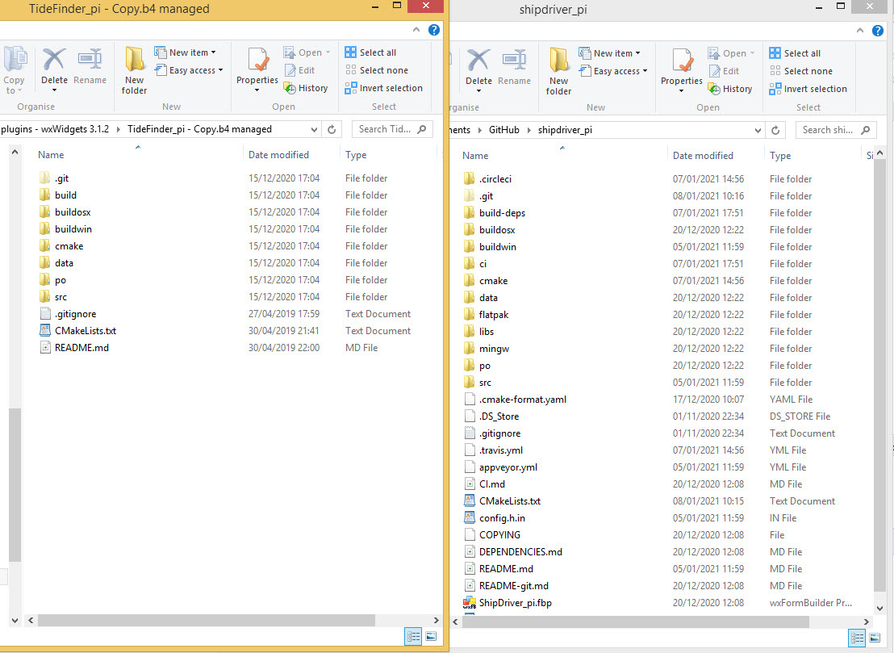

Source Code Changes
Make the following changes to the plugin source code.
-
Use API 16: Update the source code to use API 16.
-
Change the method for finding the data directory: Use GetPluginDataDir instead of GetpDataDir Examples of code changes are [[shown here|codechange]].
-
These changes should be enough for most plugins. However, more exotic plugins might need to consider the more complete list at https://github.com/leamas/OpenCPN/wiki/Plugin-adaptation
Replace/add files to enable CI (Continuous Integration)
Use the ShipDriver files/directories to make the changes required.

The following directories are copied from ShipDriver to the TideFinder directory:
-
.circleci
-
build-deps
-
ci
-
flatpak (rename org.opencpn.OpenCPN.Plugin.ShipDriver.yaml as org.opencpn.OpenCPN.Plugin.TideFinder.yaml)
-
libs
-
mingw
These ShipDriver files are added to the TideFinder/ directory:
-
.cmake-format.yaml
-
.travis.yml
-
appveyor.yml
-
CI.md
-
config.h.in
-
COPYING
-
DEPENDENCIES.md
-
README-git.md
-
shipdriver-plugin.xml.in (rename as TideFinder-plugin.xml.in)
CMakeLists.txt
A draft copy using ShipMaker CMakeLists.txt can be used as a template for the new file. Edit the draft copy and substitute TideFinder for ShipDriver. Then delete the original TideFinder file and rename the draft copy CMakeLists.txt.

Remove `src/ocpn_plugin.h' from the source files. This is in the libs/api-16 directory and used later, when building.
org.opencpn.OpenCPN.Plugin.TideFinder.yaml
This file is found in the `flatpak' directory. Just 3 name substitutions.